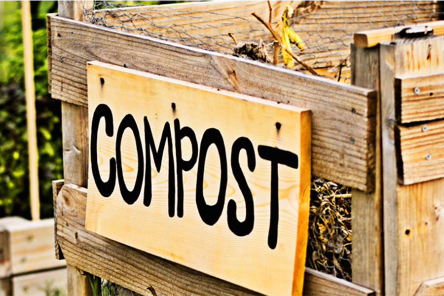

Сміттєве відро більше не потрібне
Органічні відходи не є такими нешкідливими і простими, як здається на перший погляд. Коли органіка потрапляє на смітник з іншим неорганічним сміттям, вона починає гнити. Саме через змішування органічних і неорганічних відходів утворюються ті самі смердючі смітники. Через гниття органіки, неорганіка в більшості своїй вже не підлягає переробці. Також при гнитті утворюються: рідкий фільтрат ТПВ (кислий залишок), який просочується в грунт і забруднює підземні води; метан, парниковий газ, який перевищує CO2 по утриманню тепла в атмосфері в 21 разів.
Утилізація харчових відходів за допомогою діспоузера
Діспоузер - це подрібнювач, який встановлюється в кухонній раковині, його установка допоможе істотно скоротити кількість органічного сміття, яке відправляється в сміттєвий бак. Принцип роботи діспоузера полягає в тому, що харчові відходи скидаються прямо в зливний отвір мийки. Ви відкриваєте холодну воду і включаєте подрібнювач, який перемелює їх за 10-15 секунд. З невеликим напором води подрібнені відходи змиваються в каналізацію з доставкою на очисні споруди. Для переробки не підходять: великі кістки, цибулиння, качани кукурудзи. Подрібнювач працює не розрізаючи їжу за допомогою лез, як, наприклад, блендер, а перетирає її в рідку массу. В середньому діспоузер може прослужити 5-8 років, а при належному догляді 10-15 років. На жаль, діспоузер підійде тільки для сучасних зливів.
Kомпостування
Компостери бувають 3 видів:
- Автоматичний компостер
- Вермікомпостери або черв'ячна ферма
- ЕМ-контейнери
Являє собою "відро", яке може вміщати в себе кілька кілограм відходів, які спочатку подрібнюються, потім перемішуються і під впливом кисню, вологи, тепла і спеціального складу рослинного походження (шкаралупа кокосового горіха і сода) переробляються в компост - весь процес займає 24 години. Якщо дати готової масі настоятися ще протягом приблизно двох тижнів, можна отримати ідеальне добриво для ваших рослин і навіть цілого городу. Такі компостери, на жаль, поки можна тільки замовити з США і вартість у них не маленька.
Такий спосіб переробки відходів більше підійде для заміських ділянок, але знаходяться і ті, хто розміщує вермікомпостери в квартирі. Суть в тому, що вони працюють не за рахунок електроенергії, а за рахунок спеціальних черв'ячків, які і переробляють відходи. Черв'яки з'їдають не тільки харчове сміття, а й пил з пилососа, волосся, шерсть тварин, газети, пакувальний картон, наприклад з-під яєць чи молока. Вермікомпостери є кількарівневою конструкцією: в перший лоток закладається сміття, і коли черв'яки його з'їдають, наверх ставиться другий - зі спеціальним дном, в який кладеться нова порція відходів, далі потрібно встановити третій лоток і потім процес повторюється. Наприкінці виходить стовідсотково натуральний біогумус. Мінус цього способу: часто треба подрібнювати їжу, перед тим як відправити її до черв'якам. Їм складно впоратися з великою або дуже твердою їжею. Також при неправильному використанні можуть завестися дрібні мошки або цвіль. Саме тому краще ставити такий контейнер на дачній ділянці.

Компостування за допомогою концентрату з ЕМ (ефективними мікроорганізмами). Переробка харчових відходів відбувається за допомогою ферментованої органічної речовини «бокаші» (bokashi), вирощеної на пшеничних висівках і мікроорганізмів bokashi. Такий компостер складається з відра і піддону, в якому збирається рідина. Перед переміщенням в відро, відходи бажано трохи подрібнити, один раз в день шари відходів необхідно засипати бокаші. Раз на п'ять днів бажано зливати рідину, яка там утворюється (у відрі для цього є спеціальний краник). Вона стікає вниз через сітку, яка стоїть всередині контейнера. Таким способом можна компостувати овочі та фрукти (і їх очистки), шкірку від цитрусових, готову їжу, сир, йогурт, яйця і шкаралупу, хліб, залишки кави, зів'ялі квіти, паперові серветки. Не можна компостувати рідини, наприклад, оцет, сік, воду, рослинне масло, молоко, м'ясо і рибу, в тому числі кістки, попіл, екскременти тварин, папір. Все, що є в контейнері, потім варто висипати або в компостну яму (якщо є дачна ділянка у вас або ваших друзів), або закопати під рослини у дворі. Ферментовану рідину з компостера можна зливати в труби (вона їх прочищає), або поливати рослини, розчинивши у воді в пропорції 1: 200.